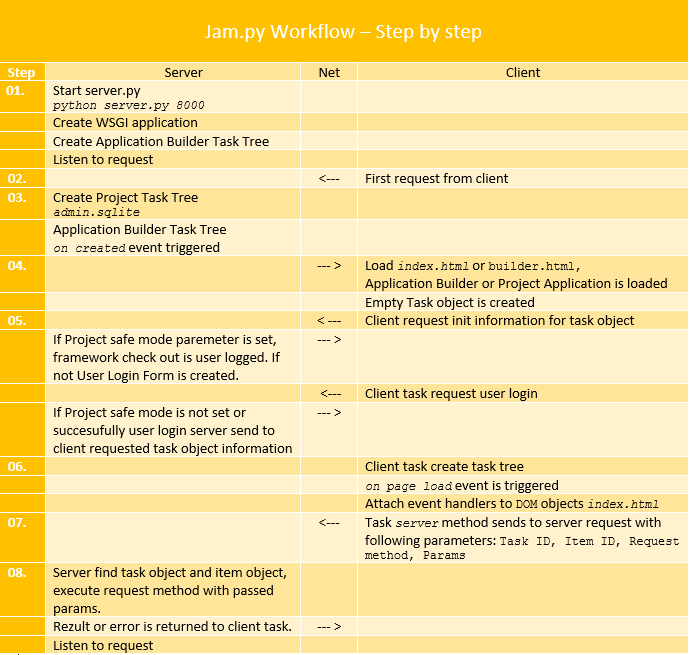

Task stablo¶
Jam.py serverska aplikacija kreira jedan server task, koji sadrži task stablo, zasnovano na informacijama u admin.sqlite bazi podataka, koja sadrži projektnu strukturu i kod kreiran u AppBuilder-u.
Klijent task¶
Kada browser učita jam.js on kreira jedan prazan klijent task objekat. Pošto je dokument učitan klijent task učitava samog sebe iz server task objekta.
Ako pokrenemo Demo aplikaciju i otvorimo browser web konzolu, i unesemo:
> task
> Task {owner: undefined, item_name: 'demo', item_caption: 'Jam.py demo', visible: null, ID: 1, ...}
Task, na klijentu, je gobalni objekat i raspoloživ je usvim klijentski modulima. On reprezentuje jedno stablo. Svaki nod stabla može sadržati druge noda:
> task.items
(6) [Group, Group, Group, Group, Group, Group]
0: Group {owner: Task, item_name: 'journals', item_caption: 'Journals', visible: true, ID: 3, ...}
1: Group {owner: Task, item_name: 'catalogs', item_caption: 'Catalogs', visible: true, ID: 2, ...}
2: Group {owner: Task, item_name: 'details', item_caption: 'Details', visible: false, ID: 4, ...}
3: Group {owner: Task, item_name: 'reports', item_caption: 'Reports', visible: true, ID: 5, ...}
4: Group {owner: Task, item_name: 'analytics', item_caption: 'Analytics', visible: true, ID: 23, ...}
5: Group {owner: Task, item_name: 'system', item_caption: 'System', visible: false, ID: 26, ...}
length: 6
__proto__: Array(0)
i tako dalje rekurzivno:
> task.items[1].items
(6) [Item, Item, Item, Item, Item, Item]
0: Item {owner: Group, item_name: 'customers', item_caption: 'Customers', visible: true, ID: 10, ...}
1: Item {owner: Group, item_name: 'tracks', item_caption: 'Tracks', visible: true, ID: 15, ...}
2: Item {owner: Group, item_name: 'albums', item_caption: 'Albums', visible: true, ID: 12, ...}
3: Item {owner: Group, item_name: 'artists', item_caption: 'Artists', visible: true, ID: 11, ...}
4: Item {owner: Group, item_name: 'genres', item_caption: 'Genres', visible: true, ID: 13, ...}
5: Item {owner: Group, item_name: 'mail', item_caption: 'Mail', visible: false, ID: 25, ...}
length: 6
__proto__: Array(0)
Svi nodovi su nasleđeni iz klase - zajedničkog pretka - AbstractItem.
Svaki nod je atribut njenog vlasnika.
> task
Task {owner: undefined, item_name: "demo", item_caption: "Jam.py demo", visible: null, ID: 1, ...}
> task.catalogs
Group {owner: Task, item_name: "catalogs", item_caption: "Catalogs", visible: true, ID: 2, ...}
> task.catalogs.customers
Item {owner: Group, item_name: "customers", item_caption: "Customers", visible: true, ID: 10, ...}
Nodovi kojima su vlasnici grupe su takođe atributi taska - zbog toga one moraju imati jedinstvena imena.
> task.customers
Item {owner: Group, item_name: "customers", item_caption: "Customers", visible: true, ID: 10, ...}
Da bi dobili vlasnika noda, koristite njegov owner atribut.
> task.customers.owner
Group {owner: Task, item_name: "catalogs", item_caption: "Catalogs", visible: true, ID: 2, ...}
> task.catalogs.owner
Task {owner: undefined, item_name: "demo", item_caption: "Jam.py demo", visible: null, ID: 1, ...}
Da bi dobili task kome pripada nod, koristite njen task atribut:
> task.customers.task
Task {owner: undefined, item_name: "demo", item_caption: "Jam.py demo", visible: null, ID: 1, ...}
> task.journals.task
Task {owner: undefined, item_name: "demo", item_caption: "Jam.py demo", visible: null, ID: 1, ...}
Svaki nod stabla ima više atributa i metoda.
> task.customers.view() // Modal customer view form is start up.
Server task¶
Hajde da demonstriramo task na serveru. on_created event je pokrenut kada je task stablo kreirno, ili ponovo izgrađeno ako je bilo menjano.
print (task.item_name)
for group in task.items:
print (' ', group.item_name)
for item in group.items:
print (' ', item.item_name)
for detail in item.items:
print (' ', detail.item_name)
Rezultat možemo videti na serverskoj konzoli:

Task nije globalni objekat u server modulu noda. Ali obično se prosleđuje kao parametar funkcijama i event hendlerima modula noda, i znajući to možemo pristupti bilo kojoj drugoj stavci stabla.
Dodatno, moguće je kreirati kopiju noda pridružene db tabelama.
cust_b = task.customers.copy()
cust_b.set_where({last_name__startwith: 'b'})
cust_b.view()
Ove kopije nisu uključene u task stablo i biće obrisane kada se više ne koriste, ali vi uvek možete kreirati task atribut koji referencira na njih i sprečiti neželjeno brisanje.
Jam.py radni tok¶
Na slici ispod je prikazan Jam.py workflow grafički.
